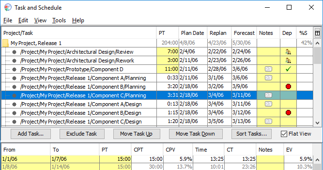
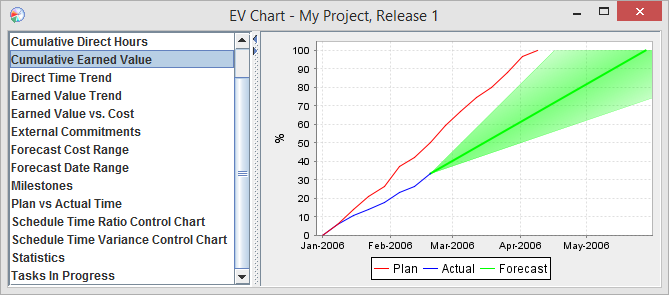
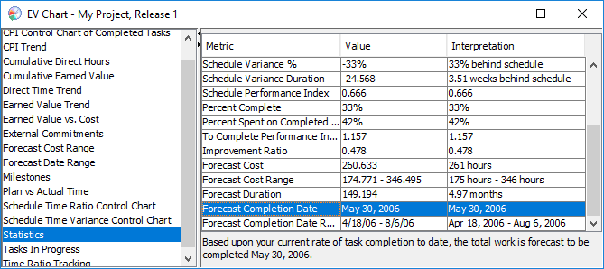

The Task & Schedule tool tries to make entering all the data necessary for project planning and tracking as painless as possible. It fills in many of the columns automatically. The following discussion will show how to create a schedule step by step.
To create a schedule, you decide what tasks you want included in the schedule, and add them with the Add Task button. You can add any node in your hierarchy to the task list; it will be added, along with all its children, recursively. As an improvement over the traditional task planning template, the dashboard displays your task list in a hierarchical fashion. You can expand and contract this hierarchical view to get coarser- or finer-grained data.
All the tasks that are to be tracked within the schedule must come from your project/task hierarchy, as defined in the Work Breakdown Structure Editor and/or the hierarchy editor. If you edit your project/task hierarchy in the future, your changes will automatically propagate into affected task lists. For example, if you add a node named "Release 3.0" to a task list, then in the future if you were to create/delete subtasks underneath "Release 3.0", they would automatically appear in the task list / disappear from the task list.
Changes made in the hierarchy automatically get reflected into the schedule, because the schedule is basically a listing of the tasks/projects in the dashboard. However, if you remove a task in the Task & Schedule tool, it does NOT get deleted from the task hierarchy of the process dashboard. All you will have done is removed the task from the schedule, not deleted it entirely from the dashboard. Deletion of tasks or projects from the dashboard itself must be done from the WBS editor or the hierarchy editor.
Once you have added tasks to the task list, you can use the Remove Task button to remove them. If you remove a top-level task, it will be removed from the task list entirely. (Top-level tasks are the tasks that you explicitly added using the Add Task button; in the task list, they appear as immediate children of the root of the tree.) If you remove a child of a top-level task, it will be not be deleted from your work hierarchy; instead, it will just be excluded from the calculations for this EV schedule. This option is appropriate if you plan to work on an item in the future, but not during the current project iteration. If you have excluded a task in this way, you can restore it by highlighting the pruned task and clicking the Restore Task button.
The planned completion dates displayed in the task list are based upon the order you plan to complete the tasks. To define the correct chronological order, check the Flat View checkbox. This will replace the hierarchical view of the task list with a flat, chronological view of the "leaf" tasks that have not yet been completed.

After you switch into flat view, you can reorder the list of tasks. Place tasks in approximate chronological order (the first task in the list should be the one you plan to work on first, and so on). There are several ways to reorder the tasks:
If you right-click on a task in the task list, a popup menu will appear, providing access to a number of convenient shortcuts. For example, you can jump to this task in the time or defect log, or you can copy information about the task to the clipboard for pasting into another program.
Once tasks are added to the task list, the dashboard will look up information like the planned time, actual time, etc. from the appropriate Project Plan Summary forms (if applicable), and display it in the appropriate boxes. You can click on any value with a yellow background and edit it, and the change will appear immediately on the associated Project Plan Summary form. Similarly, if you edit one of these values on a Project Plan Summary form, the new value will automatically appear here in the task list.
Often, you may find that you are required to perform "overhead" tasks, like reading email or attending meetings. Or, you may be assigned to some ongoing responsibility like keeping the server running, or monitoring the quality of your team's software modules. These tasks are ongoing, and usually have no beginning and no end. It doesn't make sense to say that you could ever "complete" such a task. In general, you'll spend some percentage of your available time working on these tasks. Because of this, it is generally not possible to estimate how many hours and minutes of your time the task will require. If the project lasts one month, you might spend 10 hours during that time period reading email - but if the project lasts two months, you'll spend 20 hours. Because of this, traditional PSP earned value techniques tell you not to include these tasks on your task list at all.
The Process Dashboard includes an innovative feature that makes it easy to include these "level of effort" tasks on your task list. Add the task to your task list as usual, and in the "Planned Time" column, enter a percentage. For example, if you think you'll spend 5% of your time reading email, you can add a task to your task list called "reading email," and enter "5%" in the planned time column. If you indicate that a particular task is a level of effort task, all of its subtasks will be considered level of effort tasks as well.
"Level of effort" tasks in your task list will display differently from regular tasks. For example, the actual time for these tasks will be displayed as a percentage (so you can quickly learn how much time you really spend in meetings!). Level of effort tasks do not earn any value, since it doesn't make sense to mark them "complete." For the same reason, these tasks will not contain plan/actual completion dates or percent complete/spent values.
To generate a schedule, the dashboard needs to know how much time you plan to spend working on these tasks, and when you plan to spend it. This information is displayed in the bottom portion of the window. Each row in the table represents a time period. These time periods are consecutive; each time period begins when the previous time period ends. The row for the current time period is displayed with a bold font.
Think about how much time you have available to work on the tasks listed in your task list. Describe a time period by entering the dates it will start and stop, and in the "PT" (Planned Time) column enter the number of hours you think you can spend during that time period.
Most of the time people have fairly predictable schedules - for example, you might say "I'm going to spend 20 hours a week on this until it gets done." Since this is the most common situation, the schedule will, by default, grow automatically to meet the demand. You don't have to manually add rows to your schedule until there are enough hours to cover the tasks - instead, the schedule template will automatically duplicate the final row in the table until there are enough hours. You can easily see where the automatic portion of the schedule starts because the automatic rows are displayed with a medium gray font. Thus, the black rows in the schedule template are rows that you have manually created/edited, and the gray rows are the ones which have been automatically added to meet the time requirements.
You can disable this automatic schedule expansion by entering the word END in the planned time column for a particular row. This tells the dashboard that you plan to stop work on a particular date, whether the tasks are completed or not. The dashboard will take this end date into account for its calculations; if the schedule no longer has enough planned hours to finish all of the work, some tasks may be assigned the planned completion date of "never".
As in the task list, editable cells have a yellow background. Since time periods are contiguous, editing the "To" value on one row will cause the "From" value on the following row to change accordingly. Similarly, editing the "From" value on one row will cause the "To" value on the previous row to change. If you make changes to the last black row (which is used as a template and copied to make all the subsequent gray rows), all of the gray rows will be regenerated accordingly. If you edit a value in one of the gray rows, it (and all of the rows before it) will become "real", and the row in question will become the new "template row" upon which subsequent gray rows will be based.
If you need to extend the schedule past its optimal completion date, click the Add Row button to create a new row at the bottom of your schedule. The Insert Row button will split the currently selected time period into two separate rows, while the Delete Row will merge the currently selected time period with the one that follows it. Note that it isn't possible to delete an automatically generated row. If you want to to force your schedule to end early, you should do so by entering END in the planned time column for the final time period, as described above.
If you have any "level of effort" tasks in your task list, you'll notice that there are two planned time columns - one for total planned time, and one for planned "direct" time. Once you enter how much total time you plan to spend in a period, it will automatically subtract out time for the level of effort tasks, and display the remaining time in the "PDT" column. As your schedule progresses, you'll also be able to see how much time you're spending on these "indirect" tasks by looking in the "%I" column.
Many teams use an iterative approach to develop software. To create a schedule for the second or subsequent iteration of your project, you can take these steps:
 Schedule Options..."
Schedule Options..."With the list of tasks and the calendar of available time in place, the dashboard will calculate planned completion dates for each task. As you work, you should:
While your project is in progress, you can click on the "Chart" button for access to earned value charts and numerical analyses:


If you prefer, you can view this information in HTML, and even export it Excel, by clicking the Report button.
Sometimes, you may be interested in seeing these charts and statistics for a portion of your task list. The "Filtered Chart" button makes this possible. Here are some examples of its use: